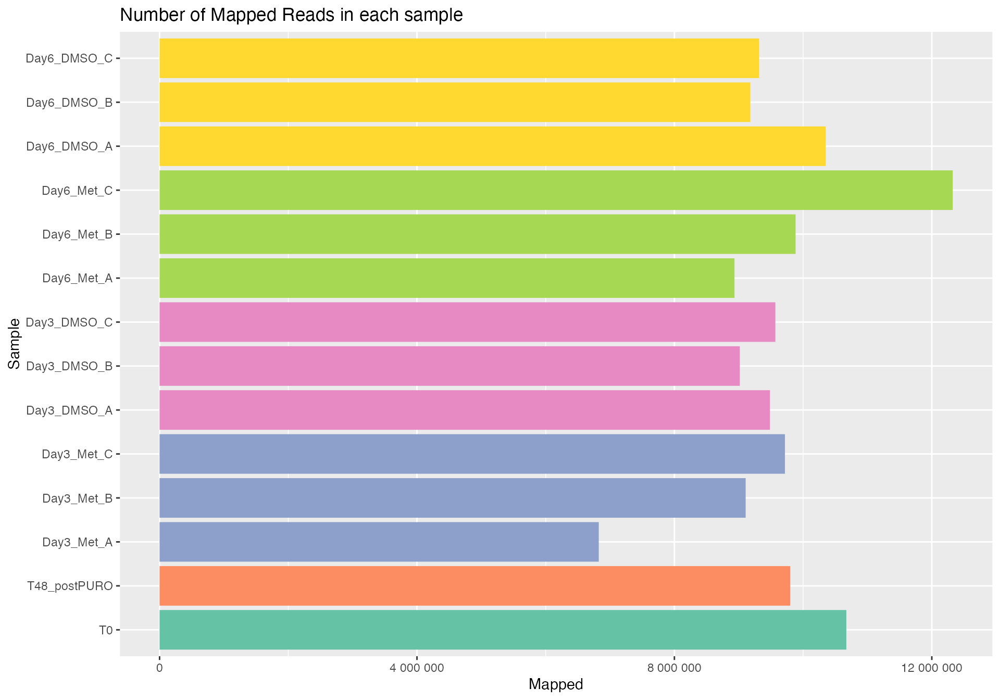
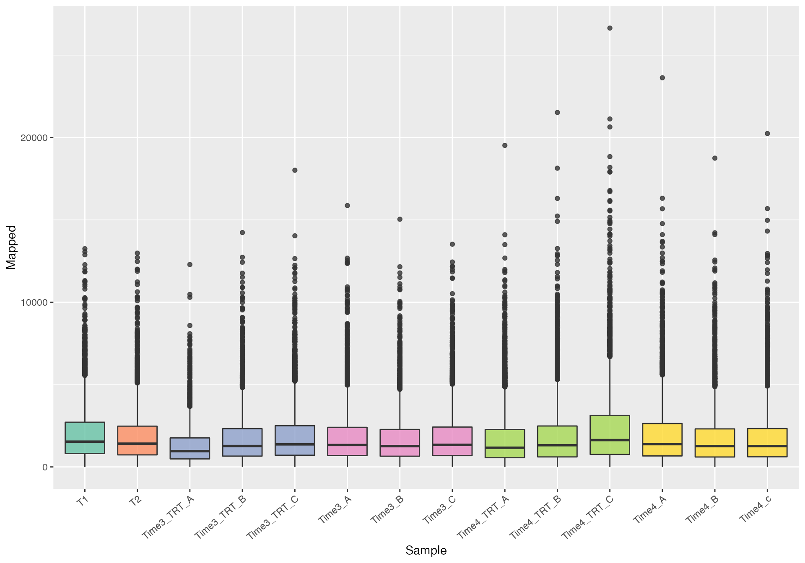
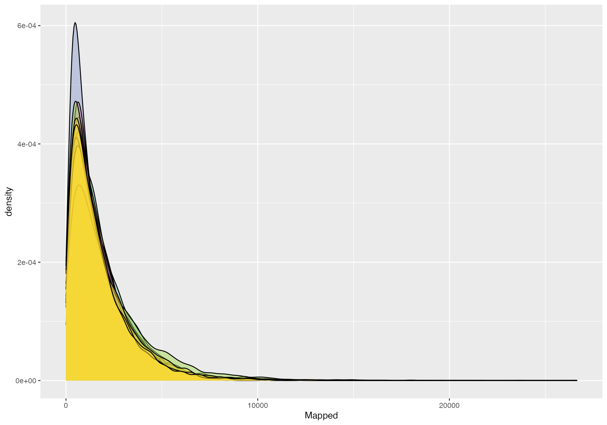
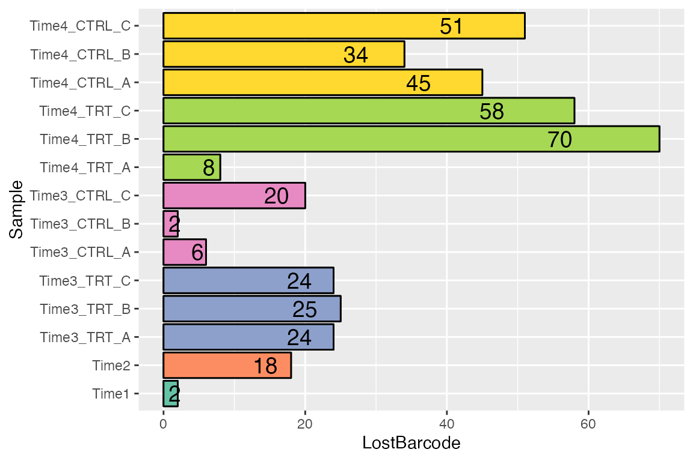
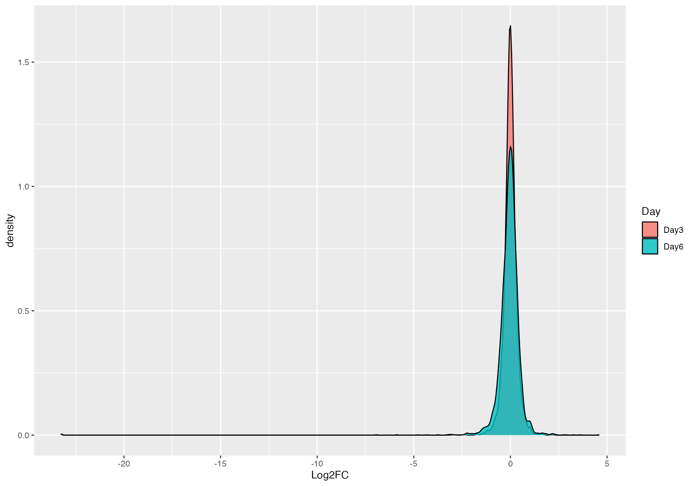
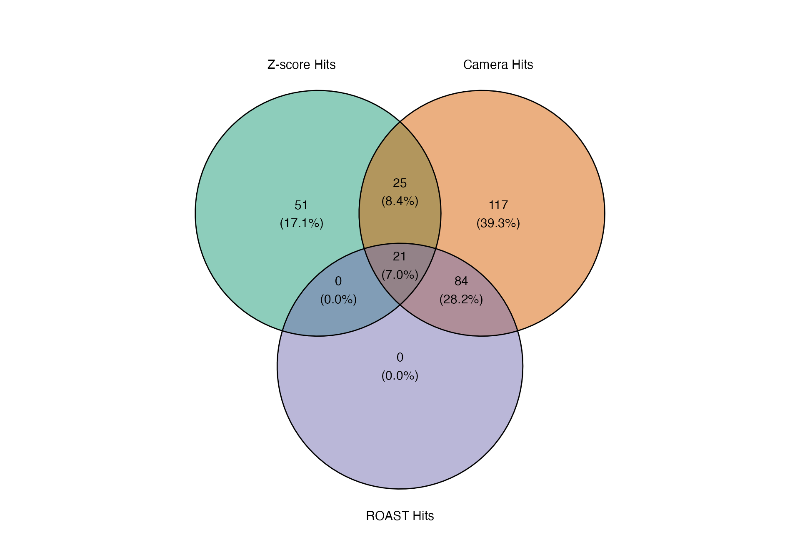

ScreenR Example Analysis
Emanuel Michele Soda
Istituto Europeo Oncologia (IEO), Milano, Italyemanuelmichele@ieo.it or emanuelsoda@gmail.com Source:
vignettes/Analysis_Example.Rmd
Analysis_Example.RmdIntroduction
The R package ScreenR has been developed to perform the analysis of data coming from RNA-seq data generated using Genetic Screening. It is based on the same idea of edgeR but it also integrate the idea at the base of Tidyverse.
Installation
Bioconductor
ScreenR requires several CRAN and Bioconductor R packages to be installed. Dependencies are usually handled automatically, when installing the package using the following commands:
install.packages("BiocManager")
BiocManager::install("ScreenR")Manual installation
In the unlikely case that a manual installation is required, e.g., if you do not install ScreenR via Bioconductor (which is highly recommended), you can install CRAN pacakges using:
install.packages("<package_name>")While Bioconductor packages can be installed from R using the following command:
BiocManager::install("<package_name>")Sometimes, it may also be useful to update Bioconductor:
BiocManager::install()Finally, the manual installation of ScreenR can, for example, be done from the command line …
R CMD INSTALL ScreenR_<version>.tar.gz… or the newest version can directly be installed from GitHub using the CRAN package devtools:
Analysis
Read Data
The input of ScreenR is a count table. A count table is usually the starting point of an RNA-seq differentially expressed genes analysis and consists of a matrix containing reads count organized with:
- Genes on the rows
- Samples on the columns
For this vignette we will use as an example a Loss of Function Genetic Screening performed using . First of all the data has to be read.
data(count_table)
data(annotation_table)
data <- count_table
colnames(data) <- c(
"Barcode", "T1", "T2", "Time3_TRT_A", "Time3_TRT_B", "Time3_TRT_C",
"Time3_A", "Time3_B", "Time3_C", "Time4_TRT_A", "Time4_TRT_B",
"Time4_TRT_C", "Time4_A", "Time4_B", "Time4_c"
)
data <- data %>%
dplyr::mutate(Barcode = as.factor(Barcode)) %>%
dplyr::filter(Barcode != "*")
total_Annotation <- annotation_table Object Creation
The second needed step is to create a ScreenR object from the count table. The ScreenR object is created using the function create_screenR_object(). This object will be used to store the most important information to perform the analysis. Most of the ScreenR function takes as main input the ScreenR object to perform the needed operation and return a result.
groups <- colnames(data)[2:length(colnames(data))]
groups <- gsub("(.*)_\\w+", "\\1", groups)
groups <- factor(x = groups, levels = unique(groups))
palette <- c(
"#66c2a5", "#fc8d62", rep("#8da0cb", 3),
rep("#e78ac3", 3),
rep("#a6d854", 3),
rep("#ffd92f", 3)
)
object <- create_screenR_object(
table = data, annotation = total_Annotation, groups = groups,
replicates = c("")
)Computing the needed tables
In order to start the analysis the data has first to be normalized and the data_table.
For what concern the normalizzation ScreenR uses a normalizzation that is called Reads Per Million Sample (RPMS) which has the following mathematical expression:
\[RPMS = \frac{Number \; of \; mapped \; reads \; to \; a \; barcode} { \sum_{sample}{Number\; of \;mapped \; reads}} *10^{6}\]
The number of reads mapped for each Barcode in a sample are normalized by the number of reads in that sample and multiplied by one million. Then has to be computed the data_table. The data_table can be seen as a tidy version of the original count table and will be used throughout the analysis.
object <- normalize_data(object)
object <- compute_data_table(object)Mapped Reads
plot <- plot_mapped_reads(object, palette) +
ggplot2::coord_flip() +
ggplot2::scale_y_continuous(labels = scales::number_format()) +
ggplot2::theme(legend.position = "none") +
ggplot2::ggtitle("Number of Mapped Reads in each sample")
plot
Quality Check
The first step to perform when dealing with RNA-seq data is to check the quality of the samples. In ScreenR this can be done using several methods. For example the distribution can be seen using both boxplots or density plots.
Boxplot Mapped Reads
plot <- distribution_mapped_reads(
object, palette, alpha = 0.8,
type = "boxplot"
) +
theme(
legend.position = "none",
axis.text.x = element_text(angle = 40, hjust = 1)
)
plot
Density plot
plot <- distribution_mapped_reads(
object, palette, alpha = 0.5,
type = "density"
) +
ggplot2::theme(legend.position = "none")
plot
Barcode Lost
Moreover another very important quality check when a Genetic Screening is performed is to check the barcode lost during the experiment. ScreenR implements a function able to compute and plot the number of barcodes lost.
plot <- plot_barcode_lost(screenR_Object = object, palette = palette) +
theme(
legend.position = "none",
axis.text.x = element_text(angle = 40, hjust = 1)
)
plot

Statistical Analysis
Finally can be conducted the real analysis. The statistical Analysis is based on three methods:
- Z-score filtering
- CAMERA filtering
- ROAST filtering
Compute Metrics
In order to compute the Z-score, first a list of metrics has to be computed. In particular a Log2FC is computed for the treated vs control samples in the different conditions. Here for example a treated vs control in different day is computed. Then the different distribution of the Z-score can be plotted using the plot_Zscore_distribution function.
# 2DG
data_with_measure_TRT <- list(
Time3 = compute_metrics(
object, control = "Time3", treatment = "TRT",
day = "Time3"
),
Time4 = compute_metrics(
object, control = "Time4", treatment = "TRT",
day = "Time4"
)
)
plot_Zscore_distribution(data_with_measure_TRT, alpha = 0.8)
Z-score hit
Now that the metrics has been computed the hits according to Z-score can be found. This in ScreenR is done using the find_zscore_hit function.
zscore_hit_TRT <- list(
Time3 = find_zscore_hit(
table_treate_vs_control = data_with_measure_TRT$Time3,
number_barcode = 7, metric = "median"
),
Time4 = find_zscore_hit(
table_treate_vs_control = data_with_measure_TRT$Time4,
number_barcode = 7, metric = "median"
)
)
zscore_hit_TRT## $Time3
## # A tibble: 30 × 2
## Gene numberOfBarcode
## <chr> <int>
## 1 Gene_116 8
## 2 Gene_120 8
## 3 Gene_128 8
## 4 Gene_156 8
## 5 Gene_173 9
## 6 Gene_190 8
## 7 Gene_193 8
## 8 Gene_200 8
## 9 Gene_218 8
## 10 Gene_226 8
## # … with 20 more rows
##
## $Time4
## # A tibble: 30 × 2
## Gene numberOfBarcode
## <chr> <int>
## 1 Gene_121 8
## 2 Gene_147 8
## 3 Gene_148 9
## 4 Gene_15 9
## 5 Gene_168 9
## 6 Gene_171 9
## 7 Gene_173 8
## 8 Gene_185 8
## 9 Gene_204 8
## 10 Gene_245 18
## # … with 20 more rowsCAMERA
The same can be done with the CAMERA hit using the function find_camera_hit.
matrix_model <- model.matrix(~0 + groups)
colnames(matrix_model) <- unique(groups)
camera_hit_TRT <- list(
Time3 = find_camera_hit(
screenR_Object = object, matrix_model = matrix_model,
contrast = "Time3_TRT"
),
Time4 = find_camera_hit(
screenR_Object = object, matrix_model = matrix_model,
contrast = "Time4_TRT"
)
)## Warning in .zscoreDGE(y = y, design = design, contrast = contrast): 3rows with
## all zero counts## Warning: Zero sample variances detected, have been offset away from zero## Warning in .zscoreDGE(y = y, design = design, contrast = contrast): 3rows with
## all zero counts## Warning: Zero sample variances detected, have been offset away from zero
camera_hit_TRT## $Time3
## # A tibble: 281 × 5
## Gene NGenes Direction PValue FDR
## <chr> <dbl> <fct> <dbl> <dbl>
## 1 Gene_199 10 Down 0.0131 0.522
## 2 Gene_239 10 Down 0.0189 0.674
## 3 Gene_78 10 Down 0.0324 0.906
## 4 Gene_478 10 Down 0.0414 0.906
## 5 Gene_508 9 Down 0.0447 0.906
## 6 Gene_516 9 Down 0.0528 0.906
## 7 Gene_298 10 Down 0.0584 0.906
## 8 Gene_347 10 Down 0.0594 0.906
## 9 Gene_183 10 Down 0.0646 0.906
## 10 Gene_245 32 Down 0.0698 0.906
## # … with 271 more rows
##
## $Time4
## # A tibble: 269 × 5
## Gene NGenes Direction PValue FDR
## <chr> <dbl> <fct> <dbl> <dbl>
## 1 Gene_199 10 Down 0.0131 0.779
## 2 Gene_239 10 Down 0.0201 0.941
## 3 Gene_78 10 Down 0.0285 0.969
## 4 Gene_298 10 Down 0.0316 0.969
## 5 Gene_508 9 Down 0.0355 0.969
## 6 Gene_516 9 Down 0.0370 0.969
## 7 Gene_494 9 Down 0.0437 0.969
## 8 Gene_478 10 Down 0.0491 0.969
## 9 Gene_257 10 Down 0.0500 0.969
## 10 Gene_183 10 Down 0.0584 0.969
## # … with 259 more rowsROAST
Last but not least this is done also for the ROAST hit using the
function
find_roast_hit.
roast_hit_TRT <- list(
Time3 = find_roast_hit(
screenR_Object = object, matrix_model = matrix_model,
contrast = "Time3_TRT"
),
Time4 = find_roast_hit(
screenR_Object = object, matrix_model = matrix_model,
contrast = "Time4_TRT"
)
)## Warning in .zscoreDGE(y = y, design = design, contrast = contrast): 3rows with
## all zero counts
## Warning in .zscoreDGE(y = y, design = design, contrast = contrast): 3rows with
## all zero counts
roast_hit_TRT## $Time3
## # A tibble: 534 × 9
## Gene NGenes PropDown PropUp Direction PValue FDR PValue.Mixed FDR.Mixed
## <chr> <int> <dbl> <dbl> <fct> <dbl> <dbl> <dbl> <dbl>
## 1 Gene_245 32 1 0 Down 0.0001 1e-4 0.0001 0.0001
## 2 Gene_364 12 1 0 Down 0.0001 1e-4 0.0001 0.0001
## 3 Gene_372 12 1 0 Down 0.0001 1e-4 0.0001 0.0001
## 4 Gene_380 10 1 0 Down 0.0001 1e-4 0.0001 0.0001
## 5 Gene_381 10 1 0 Down 0.0001 1e-4 0.0001 0.0001
## 6 Gene_1 10 1 0 Down 0.0001 1e-4 0.0001 0.0001
## 7 Gene_2 10 1 0 Down 0.0001 1e-4 0.0001 0.0001
## 8 Gene_3 10 1 0 Down 0.0001 1e-4 0.0001 0.0001
## 9 Gene_4 10 1 0 Down 0.0001 1e-4 0.0001 0.0001
## 10 Gene_5 10 1 0 Down 0.0001 1e-4 0.0001 0.0001
## # … with 524 more rows
##
## $Time4
## # A tibble: 534 × 9
## Gene NGenes PropDown PropUp Direction PValue FDR PValue.Mixed FDR.Mixed
## <chr> <int> <dbl> <dbl> <fct> <dbl> <dbl> <dbl> <dbl>
## 1 Gene_245 32 1 0 Down 0.0001 1e-4 0.0001 0.0001
## 2 Gene_364 12 1 0 Down 0.0001 1e-4 0.0001 0.0001
## 3 Gene_372 12 1 0 Down 0.0001 1e-4 0.0001 0.0001
## 4 Gene_380 10 1 0 Down 0.0001 1e-4 0.0001 0.0001
## 5 Gene_381 10 1 0 Down 0.0001 1e-4 0.0001 0.0001
## 6 Gene_1 10 1 0 Down 0.0001 1e-4 0.0001 0.0001
## 7 Gene_2 10 1 0 Down 0.0001 1e-4 0.0001 0.0001
## 8 Gene_3 10 1 0 Down 0.0001 1e-4 0.0001 0.0001
## 9 Gene_4 10 1 0 Down 0.0001 1e-4 0.0001 0.0001
## 10 Gene_5 10 1 0 Down 0.0001 1e-4 0.0001 0.0001
## # … with 524 more rowsFind Common Hit
ScreenR consider as final hit only the one present in common among the three methods. In particular two strategy are possible:
- Are considered candidate Hits the one present in at least two of the three methods
- Are considered candidate Hits the one present in all of the three methods
common_hit_TRT_at_least_2 <- list(
Time3 = find_common_hit(
zscore_hit_TRT$Time3, camera_hit_TRT$Time3, roast_hit_TRT$Day3,
common_in = 2
),
Time4 = find_common_hit(
zscore_hit_TRT$Time4, camera_hit_TRT$Time4, roast_hit_TRT$Day6,
common_in = 2
)
)
common_hit_TRT_at_least_3 <- list(
Time3 = find_common_hit(
zscore_hit_TRT$Time3, camera_hit_TRT$Time3, roast_hit_TRT$Time3,
common_in = 3
),
Time4 = find_common_hit(
zscore_hit_TRT$Time4, camera_hit_TRT$Time4, roast_hit_TRT$Time4,
common_in = 3
)
)Plot common hit
The hits can be easily visualized using the plot_common_hit function.
plot_common_hit(
hit_zscore = zscore_hit_TRT$Time3, hit_camera = camera_hit_TRT$Time3,
roast_hit_TRT$Time3
)
## R version 4.2.0 RC (2022-04-14 r82180)
## Platform: x86_64-apple-darwin17.0 (64-bit)
## Running under: macOS Big Sur/Monterey 10.16
##
## Matrix products: default
## BLAS: /Library/Frameworks/R.framework/Versions/4.2/Resources/lib/libRblas.0.dylib
## LAPACK: /Library/Frameworks/R.framework/Versions/4.2/Resources/lib/libRlapack.dylib
##
## locale:
## [1] en_US.UTF-8/en_US.UTF-8/en_US.UTF-8/C/en_US.UTF-8/en_US.UTF-8
##
## attached base packages:
## [1] stats graphics grDevices utils datasets methods base
##
## other attached packages:
## [1] ScreenR_0.99.41 tidyr_1.2.0 dplyr_1.0.8 ggplot2_3.3.5
## [5] BiocStyle_2.23.1
##
## loaded via a namespace (and not attached):
## [1] tidyselect_1.1.2 locfit_1.5-9.5 xfun_0.30
## [4] bslib_0.3.1 purrr_0.3.4 splines_4.2.0
## [7] lattice_0.20-45 colorspace_2.0-3 vctrs_0.4.1
## [10] generics_0.1.2 htmltools_0.5.2 yaml_2.3.5
## [13] utf8_1.2.2 rlang_1.0.2 pkgdown_2.0.2
## [16] jquerylib_0.1.4 pillar_1.7.0 glue_1.6.2
## [19] withr_2.5.0 lifecycle_1.0.1 stringr_1.4.0
## [22] munsell_0.5.0 gtable_0.3.0 ragg_1.2.2
## [25] memoise_2.0.1 evaluate_0.15 labeling_0.4.2
## [28] knitr_1.38 fastmap_1.1.0 fansi_1.0.3
## [31] highr_0.9 Rcpp_1.0.8.3 edgeR_3.37.1
## [34] scales_1.2.0 BiocManager_1.30.16 cachem_1.0.6
## [37] limma_3.51.8 desc_1.4.1 jsonlite_1.8.0
## [40] farver_2.1.0 systemfonts_1.0.4 fs_1.5.2
## [43] textshaping_0.3.6 digest_0.6.29 stringi_1.7.6
## [46] bookdown_0.26 grid_4.2.0 rprojroot_2.0.3
## [49] ggvenn_0.1.9 cli_3.2.0 tools_4.2.0
## [52] magrittr_2.0.3 sass_0.4.1 tibble_3.1.6
## [55] crayon_1.5.1 pkgconfig_2.0.3 ellipsis_0.3.2
## [58] rmarkdown_2.13 rstudioapi_0.13 R6_2.5.1
## [61] compiler_4.2.0